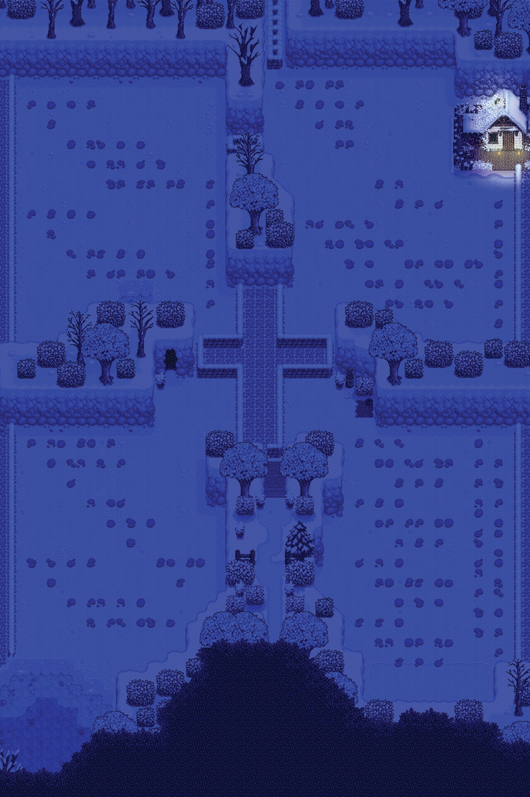

ASSIGNMENT I: Confounding Tools
Using the video game file I started playing with a group of friends online over the pandemic, I chose to use stone fences and paths that can be created in the game to block off the quadrants, creating pseudo quarantine zones, and marking down with stone paths morse code of a few words, questioning, calling for help, etc. The bottom right quadrant, as the most condensed, has the most identifiable code from morse code, … - - - …, to signify SOS as a ‘cry for help’. The torches in the final are all also in that pattern, wherever I could fit it. Overall I went for a theme of isolation and feeling trapped in this pandemic and in quarantine using a game that, rather ironically, actually helped a lot with that feeling by connecting me with friends online.
1 - Screenshot of the original co-op game with friends

2 - Clearing the field, with a change in seasons in-game, matching the winters I personally feel as though I skipped over the pandemic, as well as measuring how much of the screen will be in the final cut

3 - Clearing is further cleared, with paths being laid down to delineate sections

4 - Fully cleared, and using stone fences to physically block everything off

5 - Morse code is first laid down, nighttime so it’s dark and the paths are difficult to see
6 - Morse code with the lights, spelling out SOS as well

7 - Final poster, same variation as before, just with the addition of my friend’s character, as the host, in the center of the bottom right quadrant with all the SOS repetitions, holding up her own torch, as though signalling for help out of this quarantine